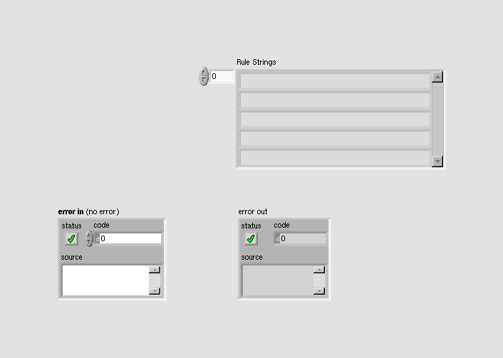
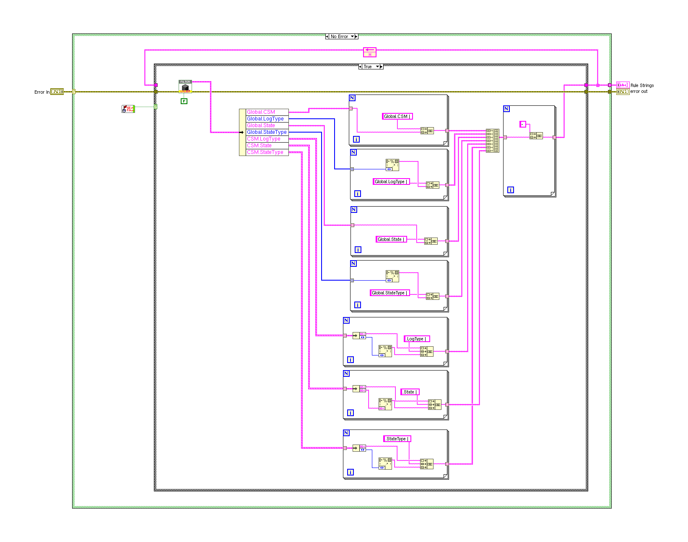

LabVIEW VI Comparison Report
06:59:16 10/29/2026
First VI: /workspace-base/src/user.lib/_NEVSTOP/Communicable State Machine(CSM)/AdvanceAPI/CSM - List Log Filter Rules As Strings.viSecond VI: /workspace/src/user.lib/_NEVSTOP/Communicable State Machine(CSM)/AdvanceAPI/CSM - List Log Filter Rules As Strings.vi
| Front Panel Overview | ||

|
 | |
| Block Diagram Overview | ||
|
 |

|
- Front Panel
- Front Panel Position/Size
- Block Diagram Functional
- Block Diagram Cosmetic
- VI Attribute
Detailed Information
1. VI Attribute - Documentation (VI Properties)
- description text : changed from "Lists global filter rules in string format, with each rule occupying one line for user viewing. This VI is primarily used for background log file saving, debugging interface viewing, and so on. > [!NOTE] Global Log Filter Rules > > Global log filter rules allow a category of logs to be filtered out so they do not appear in the global log. > > The following are the three types of log filter rules: > - Global Rules: Apply to all modules meeting the conditions. You can configure the following settings: > - Module Name: All names of the module will be filtered. > - Log Type: Such as state, message, broadcast, module Initialization, and so on. > - State Name: Any module with the state name will be filtered. > - State Type: Type of state, such as internal state, external message, and so on. > - Module Rules: Apply to specific modules. You can configure the following settings: > - Module Log Type: Modules with the specified log types of the module are filtered. > - State Name: Modules with the specified state name are filtered. > - State Type: Modules with the specified state type are filtered. > - Periodic Filter Rules: This rule is currently only effective at the registration point because it is difficult to count numbers at the publication location. > - Whether to enable periodic filtering. > - Threshold (#/s): Periodic filtering threshold. > - CheckPeriod (s): Check window time. -- Indicators -- - Rule Strings: Filter rule strings." to "Lists global filter rules in string format, with each rule occupying one line for user viewing. This VI is primarily used for background log file saving, debugging interface viewing, and so on. > [!NOTE] Global Log Filter Rules > > Global log filter rules allow a category of logs to be filtered out so they do not appear in the global log. > > The following are the three types of log filter rules: > - Global Rules: Apply to all modules meeting the conditions. You can configure the following settings: > - Module Name: All names of the module will be filtered. > - Log Type: Such as state, message, broadcast, module Initialization, and so on. > - State Name: Any module with the state name will be filtered. > - State Type: Type of state, such as internal state, external message, and so on. > - Broadcast: Broadcasts with the specified broadcast name will be filtered. Applies to Status Broadcast and Interrupt Broadcast logs. > - User Log: User logs with the specified user log name will be filtered. > - Module Rules: Apply to specific modules. You can configure the following settings: > - Module Log Type: Modules with the specified log types of the module are filtered. > - State Name: Modules with the specified state name are filtered. > - State Type: Modules with the specified state type are filtered. > - Broadcast: Modules with the specified broadcast name are filtered. > - User Log: Modules with the specified user log name are filtered. > - Periodic Filter Rules: This rule is currently only effective at the registration point because it is difficult to count numbers at the publication location. > - Whether to enable periodic filtering. > - Threshold (#/s): Periodic filtering threshold. > - CheckPeriod (s): Check window time. -- Indicators -- - Rule Strings: Filter rule strings."